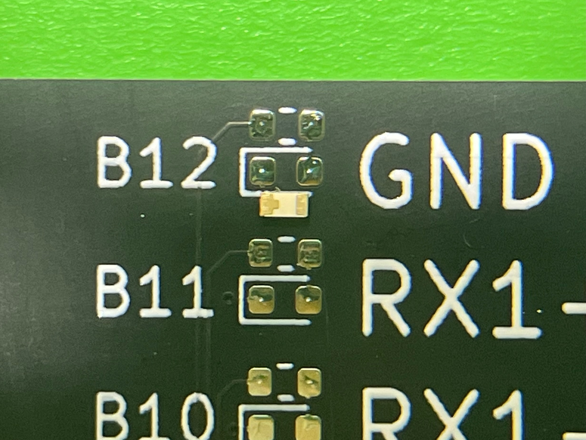

Anleitung zum USB Tester Löt Kit
-ohne vorgelöteten USB-C Buchsen-
Anleitung für pcb mit angelöteten USB-C Buchen hier
Enthaltene Komponenten
- 1x Platine mit 2x USB Typ-C Buchse
- 1x USB Typ-A 3.0 Buchse
- 1x Micro USB Typ-B Buchse
- 1x Mini USB Typ-B Buchse
- 1x USB Typ-B 3.0 Buchse
- 1x Batterie Halterung
- 30x Widerstand 2.2kΩ (25 + 5 Reserve)
- 30x LEDs gelb (25 + 5 Reserve)
- 1x Kondensator 10μF
Anleitung
-
Löte die Widerstände und die LEDs auf die Platine, die oberen Kontakte sind für die Widerstände und die
unteren für die LEDs
Wichtig: die LEDs haben eine Ausrichtung!

Auf der Rückseite der LED sieht man eine Markierung für die Kontakte. Der Kontakt mit dem Kreuz ist der Minuspol
und muss an den linken Kontakt der Platine mit der vollständigen Umrandung gelötet werden.
Auf der Vorderseite ist die Unterschiedung der beiden Kontakte der LEDs leider nur schwer zu erkennen, aber der rechte
Kontakt hat zwei kleine Streifen und links nur einen.
12 LEDs + Widerstände sind für die linke Seite der Platine und 12 für die rechte Seite bestimmt. Das letze Paar
kommt unten in die linke Ecke der Platine bei der Aufschrift "SHIELD".
-
Löte die Buchsen auf die Platine. Anordnung siehe Bild. Für die Stecker auf der rechten Seite spielt es
keine Rolle, ob einzelne Kontakte sich untereinander berühren und einen Kurzschluss bilden.
-
Löte den Kondensator an die richtige Stelle neben dem Pluspol der Batterie. Die Ausrichtung spielt keine Rolle.
-
Löte die Batterie-Halterung an. Achte auf die richtige Polung! Es gibt eine kleine Markierung an der Ecke der
Halterung für den Plus- und Minuspol.
-
Und fertig ist dein USB Tester! Viel Spass beim Testen von USB-Kabeln!
Wie es auch überall steht, ist es wichtig, dass man den Tester nicht an ein Gerät anschließt,
sondern nur Kabel!
Hier gibt auf eine Vorlage für ein
kleines einfaches Case.
Hier kann man das KiCad-Projekt zum
pcb finden. Ich habe das Original von alvarop etwas
angepasst, da einzelne Teile nicht mehr verfügbar waren. Eine aktuelle Liste gibt es hier